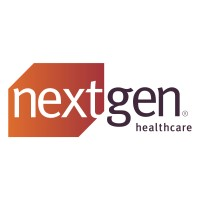

Observability
10,000+ instances rapidly enrolled through shared Dynatrace automationStaff DevOps • Platform Engineering • Multi-Account AWS • CI/CD • Secure Delivery
Design the platform. Automate the toil. Raise the engineering standard.
I’m Brandon White, a Staff DevOps Engineer focused on multi-account AWS architecture, platform automation, CI/CD standardization, and secure cloud operations. I build reusable systems that reduce manual work, improve delivery confidence, and help engineering teams move faster with stronger guardrails.
Cost Savings
$220K+ annual savings delivered through governance automation, rightsizing, and DynamoDB optimizationPlatform Scale
50 AWS environments supported across accounts and regionsTeam Enablement
7 teams enabled through shared platform solutions and operational automationAbout
Built through problem solving, adaptability, and follow-through
I started as an on-prem engineer and moved into cloud engineering later in my career. That transition taught me that technical skill matters, but the bigger differentiators are curiosity, work ethic, and the ability to keep pushing until the problem is understood and solved.
The work I’m most proud of usually starts with something messy: unclear ownership, brittle delivery, too much manual effort, or a system that no longer scales cleanly. I like turning that into something more reliable, repeatable, and easier for teams to work with.
I care a lot about problem solving, learning quickly, and building systems that actually hold up in production. Mentors helped me get here, and I try to bring that same mindset into the way I work with other engineers now.
Signature wins
Work that stands out
ShutdownSheriff
Built ShutdownSheriff, an AWS-based EC2 governance system using EventBridge, Lambda, and email workflows to automate instance management, reduce waste, and create clearer ownership across teams. The project became an AI Cup finalist out of 65 entries and was presented to the CTO and senior leadership as a practical example of automation driving measurable business value.
- Delivered more than $120,000 per year in cloud savings
- Enabled action on 100+ servers through scheduling, rightsizing, and cleanup workflows
- Changed team behavior by making ownership visible and unused infrastructure easier to remove
Observability Modernization
Led a key part of the company’s observability modernization initiative by automating Dynatrace OneAgent rollout across 10,000+ instances. Built a shared SSM Automation solution integrated into server builds and daily checks, plus a serverless workflow that identifies SSM Agent gaps and reports them to Operations.
- Turned observability rollout into a reusable shared platform capability
- Integrated directly into provisioning and ongoing compliance workflows
- Improved fleet visibility and reduced operational blind spots
Impact
Results across scale, reliability, and delivery
Observability Modernization
Led a key part of the company’s observability modernization initiative by turning Dynatrace rollout into a reusable shared platform capability.
- Built a shared SSM Automation solution that dynamically installs Dynatrace OneAgent, integrated into server builds and daily checks across 10,000+ EC2 instances
- Implemented a serverless fleet-scanning workflow to detect SSM Agent issues and report gaps to Operations
- Turned observability rollout into a reusable shared platform capability used across the organization
Golden Image Automation
Architected and built an event-driven golden image automation solution for Amazon WorkSpaces Applications (AppStream 2.0). Using EventBridge and durable Lambda workflows, the system builds images, applies configuration, installs software and OS updates, copies images across regions, and shares them to 15 AWS accounts for client fleet use.
- Automated image configuration, software installation, patching, cross-region copy, and account sharing
- Built an automated golden image process that supports fast onboarding with up-to-date images and core software preinstalled
- Helped enable the broader shift from EC2-based application delivery to managed application streaming
CI/CD at Production Scale
Improved release confidence and developer experience in HIPAA-aware healthcare environments.
- Built pipelines that run unit tests with pytest, deploy to dev and test, run integration tests, and promote to production
- Supported automated deployment flows across as many as 15 AWS production accounts
- Embedded security scans with Semgrep and CrowdStrike into delivery workflows
Technology strengths
Core tools, delivery discipline, and platform depth
Cloud & Platform Engineering
Multi-account AWS architecture across dev, test, and up to 15 production accounts, using CloudFormation, Terraform, and AWS CDK to build scalable, repeatable platforms.
Automation & Development
Python, boto3, Bash, PowerShell, SQL, and event-driven AWS services for governance tooling, database workflows, and operational automation.
CI/CD & Developer Experience
Trunk-based delivery with Bitbucket Cloud, CodeBuild, pytest, deployment pipelines, and automated unit and integration testing that move code through dev, test, and production with minimal manual effort.
Observability & Operations
Dynatrace, CloudWatch, and AWS X-Ray, paired with standardized monitoring, operational visibility, and measurable cost optimization.
Security & Governance
HIPAA-aware cloud delivery using Secrets Manager, encryption, least-privilege IAM, permission boundaries, SCP guardrails, Semgrep, and CrowdStrike.
Shared Platform Leadership
Built shared systems, golden AMIs, reusable Terraform modules, and pipeline templates used across teams, with technical guidance, architecture reviews, and informal mentorship.
How I work
Always be automating
Turn repeated work into repeatable systems that reduce toil and improve delivery.
Start small, scale what works
Prove the path first, then expand it into something teams can rely on.
Own the outcome
Push through ambiguity, find the root cause, and carry the work through to a real result.
Build for reliable delivery
Create secure, stable systems that hold up in production and make delivery easier for everyone.
Experience
Career timeline
Staff DevOps Engineer • NextGen Healthcare
Leading high-scale cloud automation initiatives, including enterprise Dynatrace rollout across 10,000+ instances, shared observability automation, golden image modernization for AppStream 2.0, EC2 governance tooling, and cloud cost reduction.
Senior DevOps Engineer • NextGen Healthcare
Built serverless restoration workflows, architected automated golden image delivery for AppStream 2.0 across regions and accounts, delivered shared SSM-based observability automation, improved database security, and drove six-figure savings.
Lead Application Developer • University of Rochester Medical Center
Owned public web platform infrastructure, improved uptime and performance, and delivered reusable CI/CD patterns in Azure DevOps.
Senior Web Developer • University of Rochester Medical Center
Led custom web development, supported enterprise CMS environments, and integrated legacy systems into modern platforms.
Earlier Roles • URMC / CedarCrestone
Built depth across IT operations, business systems, web applications, reporting, infrastructure, and technical support in demanding environments.
Credentials
Certifications, education, and publication
Certifications
Education
Clarkson UniversityB.S. in Information Systems and Business Processes
Publication
Secure Amazon Aurora clusters in HIPAA-compliant workloads
Authored a technical article published on the AWS Database Blog, covering how to secure Aurora PostgreSQL and MySQL in HIPAA-compliant environments using encryption, TLS 1.3, IAM guardrails, and operational security controls.
Contact
Hiring, collaborating, or just connecting — reach out on LinkedIn.
Greater Rochester, NY • linkedin.com/in/brandon-d-white